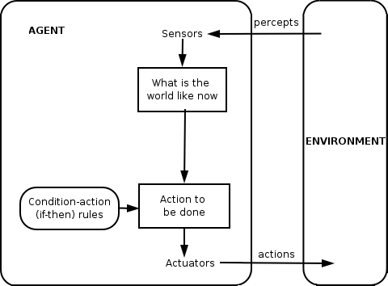
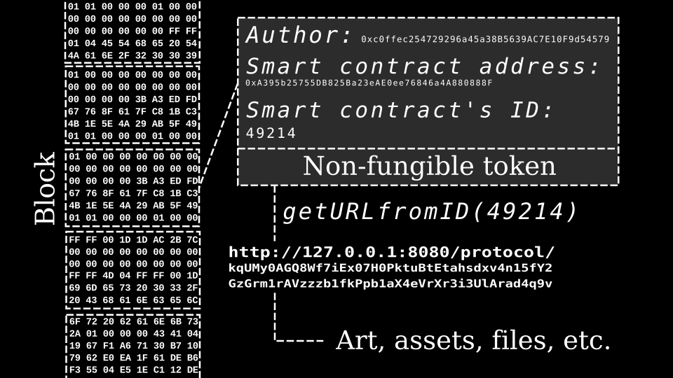

Executive Summary
Three numbers frame this report: 12 regulated business domains defined by the bill, 11.13 million active crypto users in Korea, and the projected $52.6 billion global AI agent economy by 2030.
Korea's Digital Asset Basic Act (introduced June 2025) is not just another financial regulation. It is an infrastructure-level law that defines the legal asset categories within which AI agents can autonomously trade, settle, and contract. Its 12 business domains (3 licensed + 5 registered + 2 notified + 1 special license + 1 ICO) transplant Korea's Capital Markets Act framework onto digital assets, bringing institutional structure to a market of 11.13 million users and KRW 87.2 trillion (~$64 billion) in annual trading volume. To put this in context, Korea is already the world's fourth-largest crypto derivatives market by open interest, with retail participation rates that dwarf most Western economies.
The bill's true significance lies in the concept of "data as a regulated asset." As the tokenized real-world asset (RWA) market is projected to grow from $24 billion in 2025 to an estimated $2 to $16 trillion by 2030, data that is tokenized becomes subject to quality, provenance, and diagnostic requirements that determine its market value. Just as real estate transactions require licensed appraisers, tokenized data trading will need "Data Asset Appraisers." This is a genuinely novel concept, not just in Korea but globally.
The AI agent economy is projected to grow from roughly $7.8 billion in 2025 to $52.6 billion by 2030 (CAGR 46%). Of the 12 business domains in the Digital Asset Basic Act, AI agents could technically participate in eight or more. However, agents' legal status and the application of market manipulation rules to algorithmic trading remain unresolved challenges across all four major jurisdictions (Korea, EU, US, Japan).
Anatomy of the Act: 12 Business Domains and Their Regulatory Tiers
Introduced in June 2025 by lawmaker Min Byeong-deok, the Digital Asset Basic Act transplants the classification framework of Korea's Capital Markets Act onto the digital asset space. Combined with the companion Digital Asset Innovation Act (covering lending and ICOs), the Korean digital asset ecosystem is structured into 12 distinct business domains. The core design principle is tiered regulation: the most stringent licensing requirements apply to domains that directly affect market stability (trading, brokerage, custody), while lighter notification requirements apply to technology-driven areas (order routing, quasi-advisory services).
1.1Licensed Domains (Minimum Capital: KRW 500M / ~$370K)
Trading, brokerage, and custody require a full license from Korea's Financial Services Commission (FSC). The process takes at least three months and mandates officer qualification standards, major shareholder requirements, IT stability, and conflict-of-interest safeguards. Since Korea's Virtual Asset User Protection Act took effect in July 2024, the number of registered VASPs has dropped from 37 to roughly 15, with the top three exchanges controlling 99% of market share. This extreme consolidation is a direct consequence of high entry barriers.
1.2Registered Domains (Minimum Capital: KRW 100M / ~$74K)
Collective management, wallet management, discretionary management, advisory, and lending (under the Innovation Act) operate under a registration regime. While the entry barrier is lower than full licensing, FSC review is still required. Advisory and discretionary management are the domains where autonomous AI agent participation is most technically feasible and where early "agentification" is expected.
1.3Notification and Special Licensing
Order routing and quasi-advisory services require only notification, making them the easiest domains to enter. At the other extreme, issuing asset-referenced digital assets (stablecoins) requires a "special license" with separate requirements delegated to presidential decree. The debate over a proposed 51% bank ownership requirement for stablecoin issuers could effectively restrict issuance to bank-affiliated entities, similar in spirit to the EU's electronic money institution requirement under MiCA but structurally more restrictive.
The table below maps each of the 12 business domains to its regulatory tier and relevance to the agent economy.
| # | Business Domain | Regulatory Tier | Legal Basis | Agent Relevance |
|---|---|---|---|---|
| 1 | Trading | Licensed | Basic Act | High |
| 2 | Brokerage | Licensed | Basic Act | High |
| 3 | Custody | Licensed | Basic Act | Medium |
| 4 | Collective Management | Registered | Basic Act | High |
| 5 | Wallet Management | Registered | Basic Act | High |
| 6 | Discretionary Management | Registered | Basic Act | High |
| 7 | Advisory | Registered | Basic Act | High |
| 8 | Order Routing | Notified | Basic Act | High |
| 9 | Quasi-Advisory | Notified | Basic Act | High |
| 10 | Stablecoin Issuance | Special License | Basic Act | Medium |
| 11 | General Digital Asset Issuance (ICO) | Register/Disclose | Innovation Act | Medium |
| 12 | Lending | Registered | Innovation Act | Medium |
The tiered structure sends a clear signal: high barriers for market-stability domains (trading, brokerage, custody), low barriers for innovation-driven domains (advisory, order routing, quasi-advisory). This design creates differentiated legal pathways for AI agents to enter each domain, effectively enabling "innovation within regulation." For global firms, this is conceptually similar to the EU MiCA's CASP classification, but with finer granularity (12 vs. 8 categories).
Global Regulatory Comparison: MiCA, FIT21, Japan FSA vs. Korea
Digital asset regulation reached a global inflection point between 2024 and 2026. The EU's MiCA entered full force in December 2024, the US GENIUS Act was signed in July 2025, Japan amended its Payment Services Act in June 2025, and Korea introduced its Digital Asset Basic Act in June 2025. Each jurisdiction's approach reveals both shared principles and meaningful differences.
The most striking divergence is in how finely each regime categorizes service providers. The EU MiCA defines 8 CASP (Crypto-Asset Service Provider) types, while Korea adopts the most granular classification with 12 business domains. The US FIT21 maintains the SEC/CFTC dual-regulator structure, using a novel "decentralization test" to determine jurisdictional authority. Japan's approach, rooted in its Payment Services Act, is pragmatic but narrower in scope.
| Dimension | Korea (Basic Act) | EU MiCA | US (FIT21 / GENIUS) | Japan FSA |
|---|---|---|---|---|
| Provider Categories | 12 (Basic + Innovation Act) | 8 CASP types | SEC/CFTC dual system | Payment Services Act-based |
| Stablecoins | Special license, 100%+ reserves, bank 51% ownership debate | ART/EMT split, e-money institution license | GENIUS Act: 100% reserves, federal/state dual path | Banks & fund transfer agents |
| Passporting | None (separate license/registration) | One license = 27-country access | Federal/state dual system | None |
| AI Agent Provisions | None (gap) | None (gap) | None (gap) | None (gap) |
| Effective Date | 2027-2028 (expected) | Dec 2024 (fully effective) | FIT21 House-passed; GENIUS Jul 2025 | Jun 2026 |
| Enforcement Record | User Protection Act-based | 102 CASPs licensed, EUR 540M in fines (Year 1) | SEC case-by-case enforcement | FSA administrative guidance |
The EU MiCA has demonstrated decisive enforcement, licensing 102 CASPs and imposing EUR 540 million in penalties within its first year of full implementation, setting the global benchmark. In the US, the GENIUS Act (signed July 2025) establishes a new stablecoin standard, while David Sacks' appointment as "AI & Crypto Czar" signals cross-domain policy coordination between AI and digital assets. Korea's approach is notably comprehensive in its classification granularity but lacks the EU's passporting advantage and remains untested in enforcement.
None of the four jurisdictions has explicit regulatory provisions for autonomous AI agents participating in digital asset markets. This regulatory gap is both a source of legal uncertainty and a potential first-mover advantage for whichever jurisdiction establishes agent-specific rules first. How existing market manipulation prohibitions apply to algorithmic agent trading remains an open question in every major regulatory framework.
Where Agent Economy Meets Digital Assets
The agent economy emerged as an independent field of academic study in 2025-2026. Xu (2026) proposed a five-layer architecture (Physical Infrastructure, Identity, Cognitive, Economic, Governance), Alqithami (2026) published a systematic literature review spanning 317 papers, and the ETHOS decentralized governance model was introduced. Together, these works provide the theoretical foundation for systems where AI agents autonomously conduct economic activity. By early 2026, CoinGecko tracked more than 550 AI agent crypto projects with a combined sector market cap of $4.3 billion.

3.1Agent Participation Scenarios Across the 12 Domains
Analyzing the 12 business domains along four axes (agent feasibility, legal barriers, technical maturity, and DataClinic relevance) reveals clear prioritization. Advisory and discretionary management rank highest for near-term agentification due to high technical readiness and relatively low legal barriers. Trading and brokerage already feature partial agent participation through algorithmic trading systems, though full autonomy is constrained by licensing requirements.
On the infrastructure side, Account Abstraction (ERC-4337, EIP-7702) provides the foundation for agent wallets, while Virtuals Protocol's Agent Commerce Protocol (ACP) and Fetch.ai's Autonomous Economic Agents (AEA) framework have built agent-to-agent transaction infrastructure. The x402 micropayment protocol enables agents to settle small payments directly at the HTTP layer, removing friction from machine-to-machine commerce.
3.2Market Manipulation and the 3A Framework
The thorniest legal issue in the agent economy is the collision between market manipulation rules and algorithmic trading. The Digital Asset Basic Act's unfair trading prohibitions (market manipulation, insider trading) are borrowed from securities law and presuppose a natural person with "intent." Does an AI agent have intent? Does an agent's data access constitute insider information? Is an agent's repeated trading pattern market manipulation?
Academic research has systematized these risks through the "3A Framework" (Autonomy, Anonymity, Automation). As agent autonomy increases, legal accountability becomes harder to assign. Anonymity can become a tool for regulatory evasion. Automation pushes the speed of potential market manipulation beyond human response capacity. "Progressive decentralization" has emerged as the leading academic solution: initially allowing agent participation under human oversight, then gradually expanding autonomy as governance frameworks mature.
The agent economy comprises five layers: Physical Infrastructure, Identity, Cognitive, Economic, and Governance. Korea's Digital Asset Basic Act provides the legal foundation for the Economic and Governance layers.
The global AI agent economy is projected to grow from $5-8B (2025 consensus range) to $52.6B by 2030 (CAGR 46%, MarketsandMarkets). While AI agents can technically participate in 8+ of the Act's 12 business domains, the regulatory gap around agents' legal personhood remains a shared challenge across all four jurisdictions.
Data as an Asset Class: Valuation Frameworks for Tokenized Data
"Data quality determines asset value" moved from axiom to evidence in 2025. Tang et al. (2025) developed a GenAI-based data asset valuation model, the DQSM (2025) framework introduced an ML+XAI mechanism for data value quantification, and Shapley value-based data marketplace pricing research converged to show that the causal chain from data quality to asset value can now be measured quantitatively.

4.1Three Approaches to Data Asset Valuation
Data asset valuation follows the same three-approach framework as traditional asset appraisal. The income approach discounts the future cash flows a dataset is expected to generate. The cost approach estimates what it would take to reproduce an equivalent dataset from scratch. The market approach references transaction prices of comparable datasets.
The academic breakthrough in 2025 was the shift from static to ML-driven dynamic valuation. Tang et al. demonstrated that GenAI-based integrated valuation models outperform individual approaches in both accuracy and stability, particularly for data-intensive industries (IT, financial services). The DQSM research proposed a "non-destructive diagnostic" mechanism that combines ML and XAI to assess a dataset's contribution potential without exposing its actual contents, a critical feature for competitive data markets.
4.2Smart Contracts and Data Quality Consensus
Heideman et al. (2024) implemented a smart contract-based data quality consensus protocol in Solidity and validated it on Ethereum. The key implication: data quality diagnostic results can become automatically enforceable trading conditions on the blockchain. For example, a smart contract could be designed to execute a data asset transaction only when the dataset's quality score exceeds a defined threshold. The pipeline of "diagnosis, smart contract condition, asset transaction" has the potential to become a new standard for data asset trading.
4.3Real Estate Appraisal vs. Data Appraisal
The most intuitive analogy for data asset appraisal is real estate. In real estate transactions, licensed appraisers evaluate market value, income value, and cost, and these assessments serve as the basis for mortgages, sales, and taxation. For data assets, the evaluation targets are quality, diversity, provenance, and fitness for purpose, which become the basis for token pricing, trading conditions, and disclosure requirements.
The critical difference: real estate has physical substance, and appraisal methodologies have matured over more than a century. Data assets are non-physical, making quality metrics the "sole objective evidence" of value. While the tokenized RWA market reached approximately $24 billion in 2025, most tokens show limited secondary market liquidity and restricted investor participation (arXiv:2508.11651). Tokenization alone does not create liquidity. Third-party quality certification is what generates a liquidity premium.
The data marketplace market is projected to grow from $1.86B (2025) to $5.73B (2030, CAGR 25.2%), and the data governance market from $5.38B (2026) to $24.07B (2034, CAGR 20.5%). At the intersection of these two markets, demand for "data asset appraisal" is emerging. Chapter 5 of the Digital Asset Basic Act, which mandates disclosure requirements, provides the legal enforcement mechanism for this demand.
Outlook and Implications: The Digital Asset Ecosystem by 2027
The bill's effective date is expected around 2027-2028, accounting for parliamentary committee review and subordinate legislation drafting. At the April 2026 GFC (Global Finance Conference), Koo Yun-cheol referenced "legislative support acceleration," a positive signal. However, the timeline depends on whether the Basic Act and Innovation Act are merged or kept separate.
5.1Market Structure Scenarios
Post-enactment market structure could unfold in three scenarios. In the conservative scenario, high entry barriers under the licensing regime preserve the current oligopoly of top incumbents, with limited new entrants. In the base-case scenario, fintech and AI firms enter through the registration and notification tiers, and agent-powered services emerge in advisory and order routing. In the optimistic scenario, global firms accelerate entry into the Korean market, and tokenized data grows as a distinct market segment.
5.2The Stablecoin Debate and Agent Payment Infrastructure
The debate over the 51% bank ownership requirement for stablecoin issuers is a pivotal variable for agent payment infrastructure. The Bank of Korea favors bank-led issuance to mitigate monetary policy risks, while the FSC argues for opening the field to non-bank issuers. The resolution determines how many payment instruments agents will have access to and how easily they can settle transactions in the Korean market.
5.3The Data Infrastructure Policy Gap as an Opportunity
Korea's government has committed significant capital to AI models (Upstage: KRW 560B), infrastructure (Haenam Solaseado: KRW 2.9T), and semiconductors (Rebellions: KRW 640B), but a standalone data infrastructure funding track has not been announced. In comparison, India (BharatGen, 22-language data-first strategy) and Singapore (SEA-LION, 13 languages) show a pattern where model funds are followed by dedicated data and evaluation funds. If the Digital Asset Basic Act establishes the legal foundation for data as an asset class, "from data quality diagnostics to asset valuation" becomes a new policy demand.
IOSCO's "same activities, same risks, same regulatory outcomes" principle suggests that tokenized data assets will likely face disclosure and appraisal requirements comparable to traditional financial assets. As the RWA tokenization market grows toward $2 to $16 trillion by 2030 (McKinsey conservative to BCG optimistic estimates), the quality of that growth depends on a single question: "Who certifies the trustworthiness of tokenized assets, and how?"
Why Pebblous Is Watching This Law: The Era of the Data Asset Appraiser
The Digital Asset Basic Act defines the legal status of tokenized assets. When data is tokenized and becomes a tradable asset, objective quality diagnostics and certification infrastructure become essential. Trading data tokens without such infrastructure is the equivalent of real estate transactions without appraisals. This is where the "Data Asset Appraiser" role emerges.
Where Business Meets Technology
DataClinic's three-level diagnostic framework maps directly to the disclosure obligations in Chapter 5 of the Act. Level 1 (basic quality) detects format errors, missing values, and outliers, covering baseline disclosure requirements. Level 2 (embedding analysis) evaluates data distribution, diversity, and representativeness, conceptually aligned with decentralized data marketplace needs. Level 3 (domain-specific) provides the evidence base for sector-specific asset value differentiation across finance, healthcare, manufacturing, and other industries.
Academic Foundations and Practical Implications
The DQSM (2025) framework's mechanism for "evaluating data value without exposing contents" is conceptually aligned with DataClinic's non-destructive diagnostic approach. Shapley value-based data trading research demonstrates that individual data contributions can be fairly priced in agent-to-agent transactions, and DataClinic diagnostic outputs could serve as inputs for Shapley value calculations. PebbloSim's patented audit trail generation capability (US Patent 12,481,720) provides ISO 42001-compliant provenance documentation that supports the legal credibility of data assets.
What Changes for Practitioners
Enterprises with large-scale industrial data could tokenize their datasets post-enactment, trading them with supply chain partners or managing AI training data as regulated assets. In this scenario, a data quality diagnostic report functions as an "asset appraisal certificate," and Chapter 5's disclosure mandates make this certificate a legal requirement. When enterprise AI agents autonomously trade digital assets, data quality must become part of the transaction conditions, creating the pipeline from "diagnostics to smart contract conditions to autonomous agent trading."
Questions Worth Exploring
When the Digital Asset Basic Act takes effect, will data quality diagnostics become a mandatory component of financial regulation? Agent-driven data quality assessment and its integration into trading conditions is technically feasible, but what legal framework does it require? The full-stack pipeline from DataClinic to PebbloSim to DataGreenhouse (diagnostics to asset improvement) offers one answer to these questions, but its form will keep evolving as markets and regulations develop.
A global pattern is clear: in India (BharatGen) and Singapore (SEA-LION), model-focused funding is followed by dedicated data and evaluation funds. Korea's next investment cycle is likely to open opportunities for data infrastructure companies. The Digital Asset Basic Act creates the legal foundation for those opportunities. "Tokenization creates possibility; trust must be proven." Bridging that gap is precisely the role of a Data Asset Appraiser.
References
Academic Papers
- Pithadia, Fenoglio, Batrinca, Treleaven et al. "Data Assets: Tokenization and Valuation" (SSRN 4419590, 2023)
- Hafner, Mira da Silva. "Data valuation as a business capability: from research to practice" (Springer ISeBM 23:745-784, 2025)
- Xu, Minghui. "The Agent Economy: A Blockchain-Based Foundation for Autonomous AI Agents" (arXiv:2602.14219, 2026)
- Alqithami, Saad. "Autonomous Agents on Blockchains: Standards, Execution Models, and Trust Boundaries" (arXiv:2601.04583, 2026)
- "A Comprehensive Study of Shapley Value in Data Analytics" (arXiv:2412.01460, 2024)
- Xia, Ning. "Exploration on Real World Assets (RWAs) & Tokenization" (arXiv:2503.01111, 2025)
- Tang et al. "Data asset valuation model based on generative artificial intelligence" (PLOS ONE, 2025)
- "Selecting Data Assets in Data Marketplaces (DQSM)" (BISE, Springer, 2025)
- "Data Measurements for Decentralized Data Markets" (arXiv:2406.04257, 2024)
- Heideman, Kumara, Van Den Heuvel, Tamburri. "Smart Contracts as Data Quality Consensus Enforcers in Data Markets" (Springer BMSD, 2024)
- "Can We Govern the Agent-to-Agent Economy?" (arXiv:2501.16606, 2025)
- "Decentralized Governance of Autonomous AI Agents (ETHOS)" (arXiv:2412.17114, 2024)
- "Giving AI Agents Access to Cryptocurrency and Smart Contracts Creates New Vectors of AI Harm" (arXiv:2507.08249, 2025)
- "Is Your AI Truly Yours? Leveraging Blockchain for Copyrights, Provenance, and Lineage" (arXiv:2404.06077, 2024/2025)
- "Tokenize Everything, But Can You Sell It? RWA Liquidity Challenges" (arXiv:2508.11651, 2025)
- "Shapley value-based data valuation for machine learning data markets" (Discover Applied Sciences, Springer, 2025)
Legislation & Regulatory Documents
- Min Byeong-deok, Digital Asset Basic Act (Bill No. 2213449, introduced June 10, 2025)
- EU MiCA (Markets in Crypto-Assets Regulation, fully effective December 30, 2024)
- US GENIUS Act (Guiding and Establishing National Innovation for US Stablecoins, signed July 18, 2025)
- US FIT21 (Financial Innovation and Technology for the 21st Century Act, H.R.4763)
- Japan FSA Payment Services Act / Financial Instruments and Exchange Act amendments (passed June 6, 2025; effective June 13, 2026)
- IOSCO "Tokenization of Financial Assets" (FR/17/25, November 2025)
- Korea AI Basic Act (passed December 26, 2025; effective January 22, 2026)
- Korea Virtual Asset User Protection Act (effective July 19, 2024)
Market Data & Reports
- Korea Financial Intelligence Unit (KoFIU) Virtual Asset Market Survey (H1 2024 - H2 2025)
- CoinGecko 2025 Annual Report
- MarketsandMarkets AI Agent Market Report (2025)
- Grand View Research Data Marketplace Report (2025)
- Fortune Business Insights Data Governance Market Report (2026)
- Broadridge Digital Transformation Study
- McKinsey Global Institute RWA Tokenization Outlook
- BCG + Ripple RWA Tokenization Joint Report
Industry & News
- FSC Press Release: National Growth Fund KRW 560B investment in Upstage (May 3, 2026)
- Stanford HAI AI Index 2026 (April 13, 2026)
- GFC 2026 Koo Yun-cheol remarks (April 23, 2026)